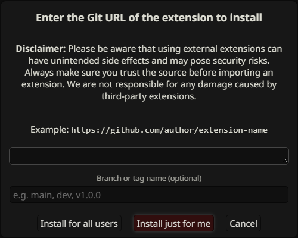

Getting started & panel
Install one copy, connect to the native Prompt Manager, and arrange the floating panel for your workspace.
Install or update


- In SillyTavern, open Extensions → Install extension. Use
https://github.com/miputra/STPHE. - Reload SillyTavern and enable the extension if necessary.
- Choose a Chat Completion API and open AI Response Configuration once so its native Prompt Manager is available.
- Find the floating STPHE panel and press Refresh if the prompt list is not visible.
For manual installation, copy the entire project folder into data\default-user\extensions\ inside your SillyTavern installation. For example, use data\default-user\extensions\STPHE\, with manifest.json, index.js, style.css, and src/ directly inside that folder. Reload SillyTavern afterward. When upgrading from Prompt Folders, update that copy instead of installing a duplicate.
Create your first folder

- Click Folder in the toolbar and name it
Scenes. - Use a prompt’s move selector to assign it to Scenes.
- Open the folder’s ⋮ menu and choose New subfolder, such as Weather.
- Move another prompt into Weather, then collapse and reopen Scenes with its arrow.
- Try the folder master toggle off and on. Individual intended prompt states are preserved.
See folder muting for the difference between the master toggle and Enable/Disable ALL.
Toolbar & status

| Control | Purpose |
|---|---|
| Refresh | Read the native prompt list again. |
| Folder / + Prompt | Create a top-level folder or a new native prompt. |
| Preview | Read enabled prompts in tree order. |
| Filter (funnel) | Open manual matching and saved presets. |
| Auto Filter (wand) | Configure chat-driven rules. |
| Import/Export | Back up or import the prompt list and folder metadata. |
| Remove all | Choose which prompts/folders to remove and whether deletion is permanent. |
The status area reports prompt/enabled counts. During native updates, loading/busy protection temporarily prevents conflicting tree actions. Wait for it to finish before retrying. See Remove all choices before using that menu.
Search names & identifiers

Type into Search prompts… to filter the visible tree by prompt name or identifier. Matching ignores case. Clear the input to restore the full tree. Searching changes visibility only; it does not enable or disable anything.
The panel search does not search prompt content or tags. For those, open Filter and choose Word, Regex, XML tag, or Prompt tag.
Move, resize & minimize

Drag the STPHE header to reposition the dock. Use the header’s grow/shrink controls for step changes, Move to other side to switch its anchor, and the resize edge for width or the corner handle for both dimensions. The layout is constrained to the window.
Click Minimize to hide the main panel. Use Show STPHE to restore it. Position, dimensions, side and minimized state are saved with the extension’s interface settings.
Native Prompt Manager integration
The integration has been checked with SillyTavern 1.18.0. It organizes the active Chat Completion Prompt Manager list; it is not a separate prompt engine. Native edits, names, enabled states and preset changes are read back into the panel, and tree ordering is synchronized to native prompt order.
You can organize prompts without a live model connection. Generating replies still requires your usual SillyTavern API setup. If a SillyTavern update changes native controls, open AI Response Configuration and Refresh first; see missing prompt troubleshooting.